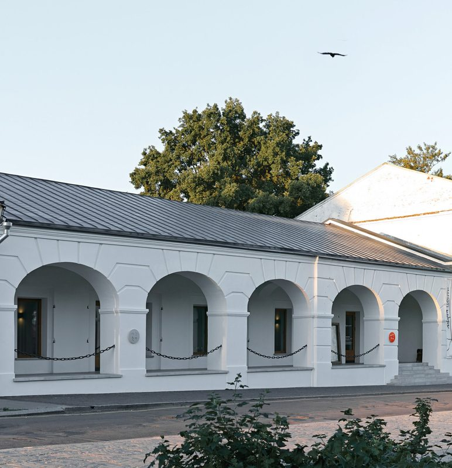
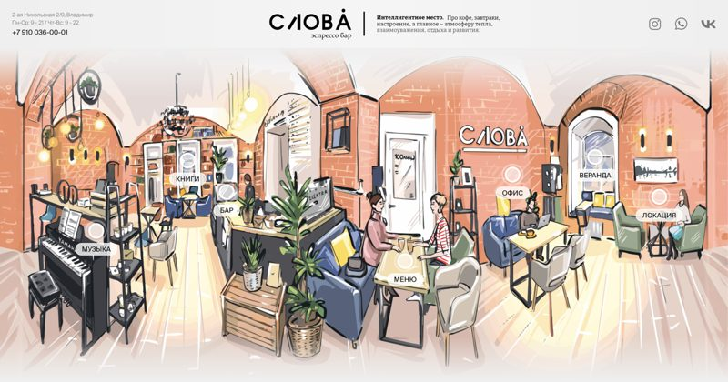
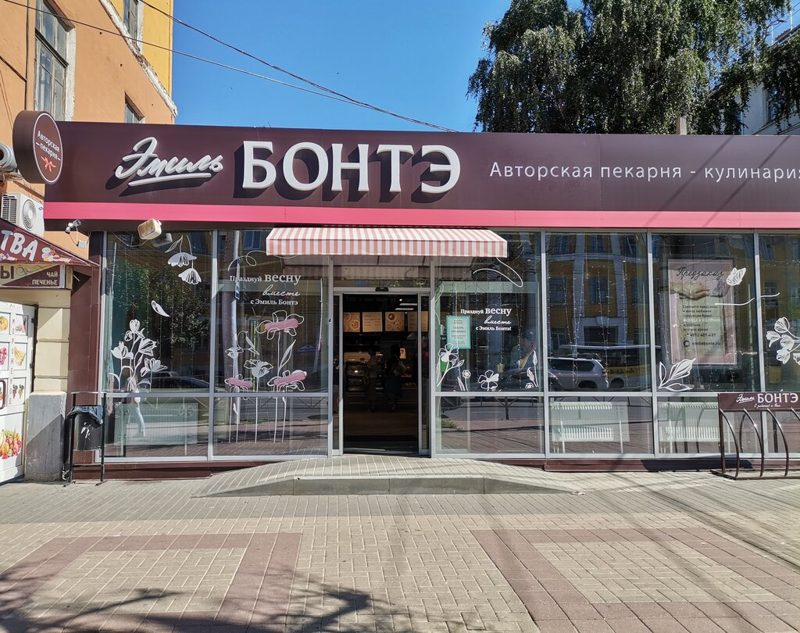
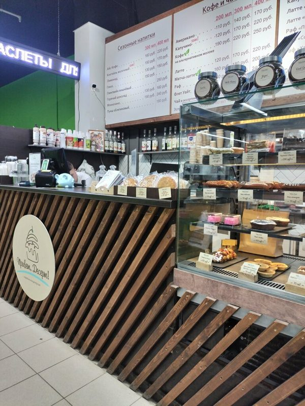
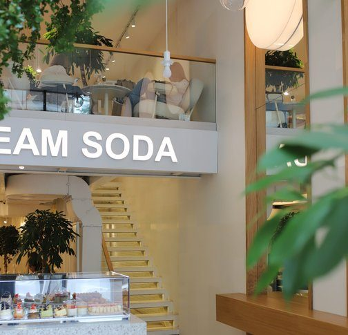
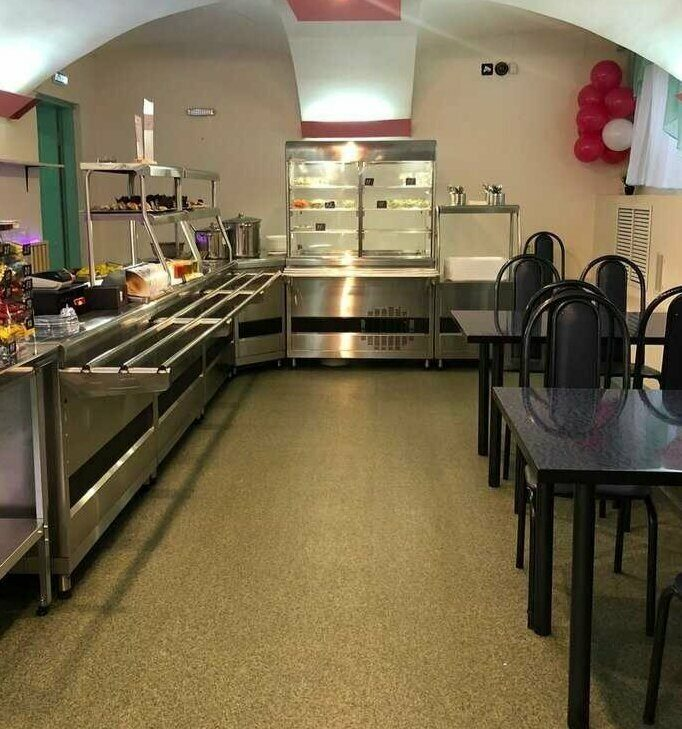
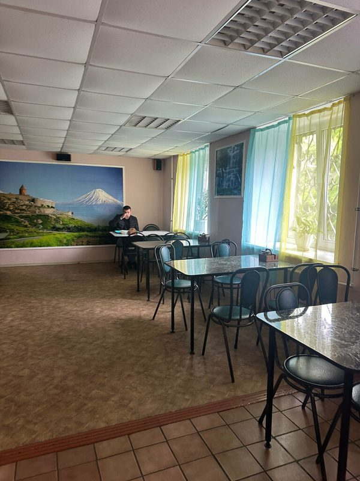
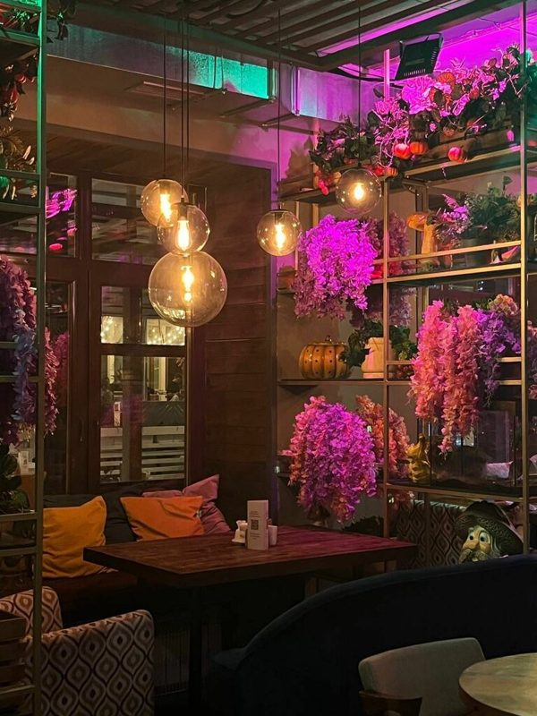
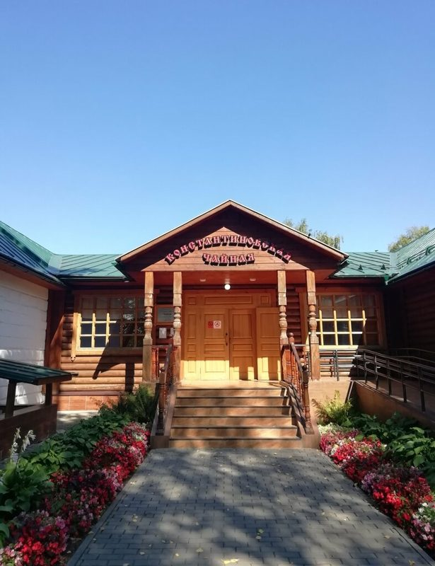
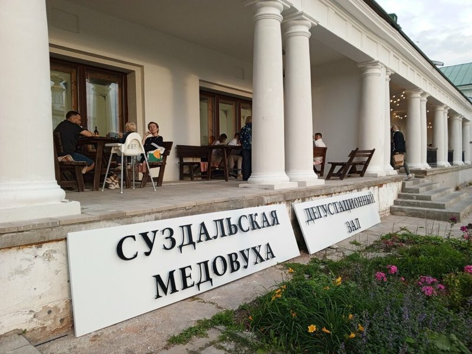

Недорого и по-местному. ✓ — часы проверены по сайту или справочнику; перед походом уточняйте. Средний чек на одного.
Курник, калинник, медовуха, суздальские огурцы, сбитень — история и где попробовать.
Места, где хорошо снимать книги. Рейтинги в открытых источниках не нашли — не выдумываем. Точки на карте приблизительные (📚).
Большая читальня с книгами и журналами; в сентябре 2026 внутри открылась кофейня «Горький кофе» — кадр «книга + чашка» прямо среди стеллажей. В здании также «Книжная лавка». Кафе «Пешков» с ретро-декором (газеты, книги, самовар) — по данным 2023 г., не подтверждено.
Деревянный дом в Мещёре, откуда начинается «Тропа Паустовского»: резные наличники, осенний сад, книги Паустовского в кадре — самая «литературная» локация поездки.
Барский дом с белыми колоннами и видом на Оку — декорация к поэме Есенина. Хорошо снимать томик Есенина на веранде и в аллеях; рядом Константиновская чайная.
Кафе-библиотека, где книги можно купить или взять почитать; окна с видом на реку — в отзывах хвалят именно чтение с видом.

Белые купеческие торговые ряды с арками, сводчатые подвалы, двор; библиотека книг об искусстве и архитектуре (Garage, «Стрелка», V-A-C), книжный магазин и кафе. Вход свободный.

Кирпичные своды, библиотека ~1 500 книг, пианино и винил — готовый «уютный книжный» кадр перед поездом.

Авторская пекарня-кондитерская, открыта рано: удобно сразу с поезда.
«Быстрое обслуживание, вкусные блюда, свежие продукты, приветливый персонал, отличный кофе…» — 2ГИС
«…грязные столы… и оочень медленное обслуживание» — 2ГИС

Кофейня с вафлями, пончиками и сэндвичами; раньше всех — с 07:00.
«Кофе всегда вкусный, приятная бариста» — Яндекс (через Restaurant Guru)
Жалуются на долгое ожидание и ошибки в заказах — Restaurant Guru (сводка отзывов)

Кофейня-бар на Почтовой с 2013 года: бельгийские вафли, десерты, кофе.
«…уютная творческая атмосфера вкупе с приятной музыкой и удобной мебелью…» — Yell.ru (описание)

Хвалят в обзоре Я62 (июнь 2026): вкусно, чисто, обед на двоих до 1 000 ₽. Только будни — подходит 26–27.10.
По обзору Я62 (июнь 2026): вкусно, чисто, обед на двоих до 1 000 ₽ — Я62.ру

Обзор Я62 (май 2026): хвалят окрошку, комплекс заявлен от 200 ₽, реально ~450 ₽. Лучше приходить до 14:00.
«Неброские вывески обещают комплексный обед за 200 рублей, но вышло в два раза дороже» — Я62.ру
«…пришли после 14 часов дня, поэтому выбор был не очень большой» — Я62.ру

Русская кухня с рязанскими названиями; ребрендинг Константина Ивлева в шоу «На ножах» (бывший «Базар»). Бывший ресторан «Есть» по этому адресу закрыт.
Попробовать: рязанский курник и рыбник (605 ₽), «Демьянова уха», «По щучьему велению» — котлеты из щуки (по Я62 и меню в сервисах доставки)
«Обслуживание отличное. Быстро все принесли. Заказанные блюда очень вкусные» — Restaurant Guru

Чайная при музее-заповеднике Есенина, рядом с усадьбами.
На территории санатория «Солотча», в сосновом лесу у Старицы. Это та «Почтовая, 4а» — она в Солотче, а не в центре Рязани. Меню: мясо, рыба, пицца, роллы.

Дегустация в расписных палатах XVI века с рассказом о традициях.
Попробовать: медовуха (алкогольная 550 ₽, безалкогольная 480 ₽)
«…полностью оправдывает ожидания…» — Яндекс Карты
«Медовуха крайне посредственная… ощущается водянистой» — Яндекс Карты
Столовая в центре: супы, пирожки, горячее, большие порции; «Адвентология» (2026) — в списке проверенных недорогих мест.
Попробовать: пирожки с собой, медовик (по отзыву на Дзене)
«Порции… большие, еда простая, домашняя» — Дзен
«…в час пик (12:30–14:00) может быть очередь, но она движется быстро» — Адвентология
Суздаль (не Рязань): демократичная русская кухня, сеты настоек и медовухи. ⚠ В одном каталоге «временно закрыт» — позвонить.
Хвалят атмосферу и русскую кухню, жалуются на высокие цены — Restaurant Guru (сводка)
⚠ В одном каталоге отмечен как «временно закрыт» — позвонить перед походом